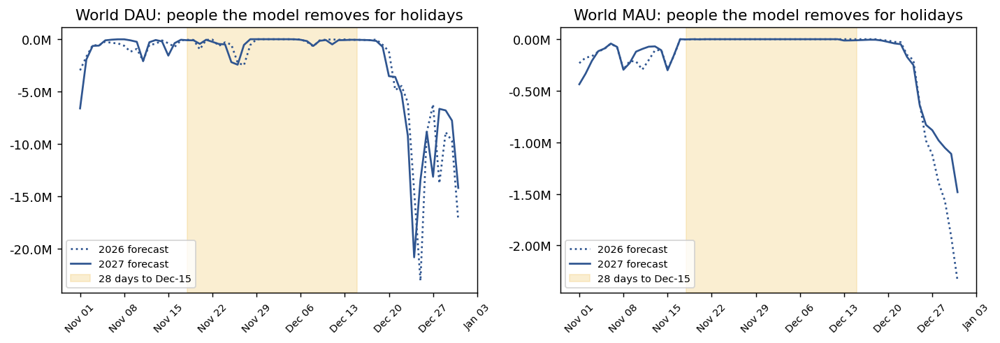
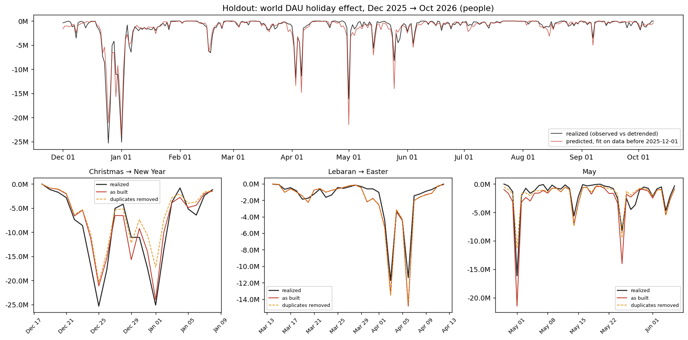
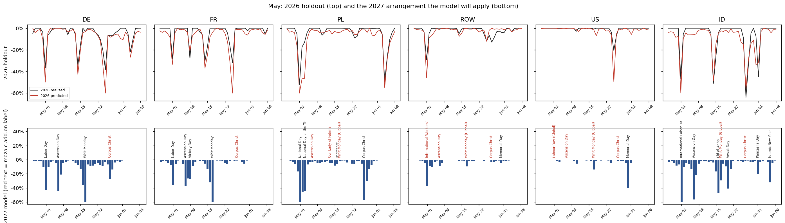
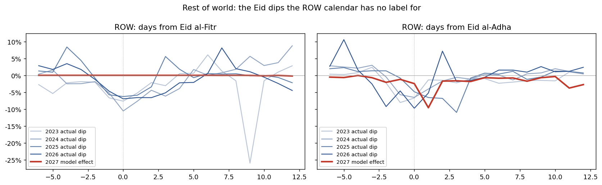
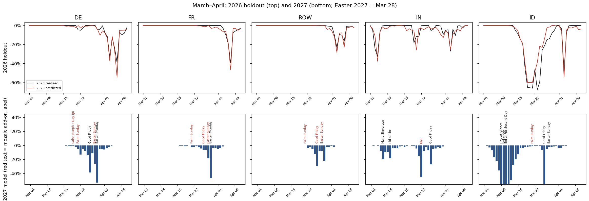
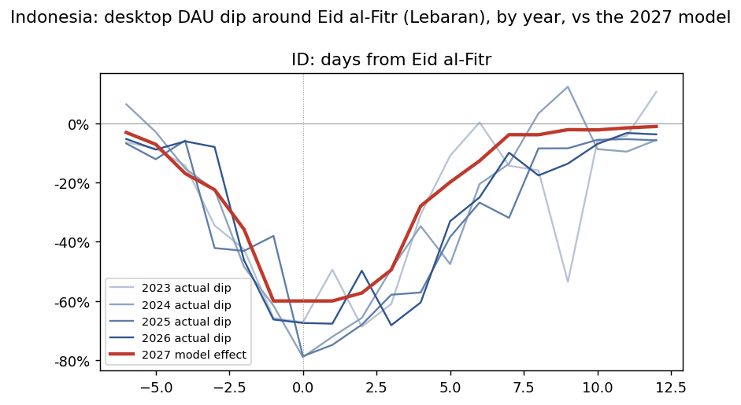
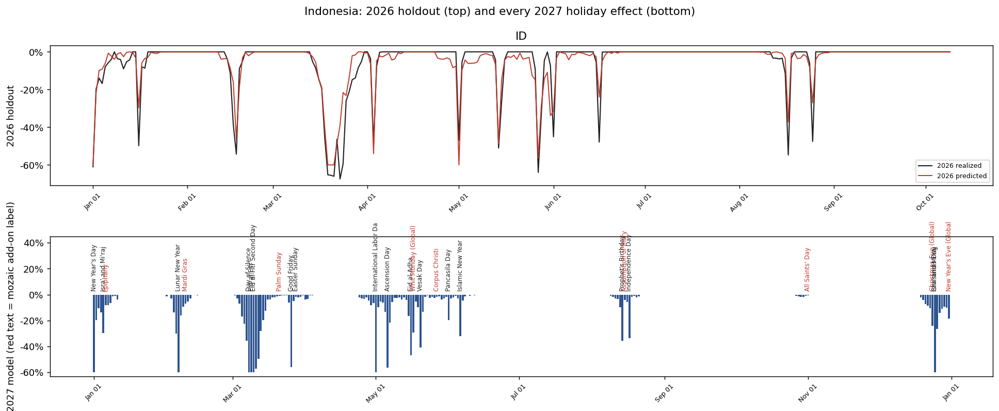
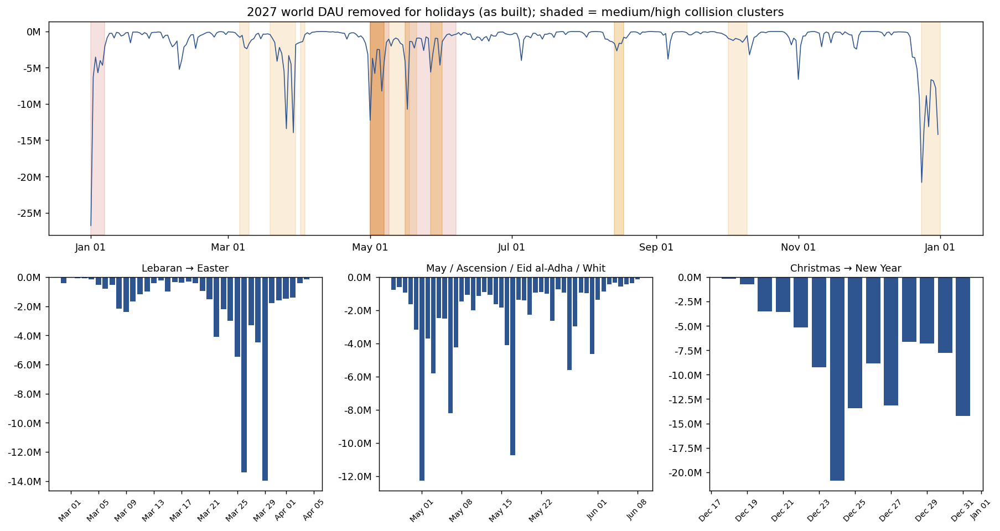

Moving holidays that collide with each other or with fixed holidays in 2027, read through the model that will forecast them: the locked 2027 Glean-history desktop build (build 5). The headline KPIs are safe; the daily tracking is not. Day-by-day view: 2027 holiday calendar.
The DAU KPI is the 28-day average ending Dec 15 (Nov 18 → Dec 15). Both years hold US Thanksgiving on Thursday (Nov 26 2026, Nov 25 2027) and Black Friday, and nothing else of size. The model removes -320K/day on average inside the 2027 window, against -331K in 2026: a 11K year-over-year difference. The MAU KPI (raw Dec-15 MAU) carries -10K of holiday effect in 2027 and 0K in 2026.
One modelling fault does touch this window (section 4): the 2025 outage label diluted what the model learned from Thanksgiving 2025. Removing it would deepen the window by -70K in 2027 and -79K in 2026, so it shifts both years equally and leaves the comparison alone. Thanksgiving Day itself is forecast at −27% against −29% to −34% actual (2022–2025); Black Friday's −31% matches history.

research/holidays-2027/plots/kpi_window.png — world people removed for holidays, 2026 forecast (dotted) vs 2027 forecast (solid), on a shared Nov–Dec axis; shaded = 28 days ending Dec 15.Ranked by the people involved and by evidence that the model gets this kind of arrangement wrong. The evidence is a holdout test: holiday effects fit only on data before 2025-12-01, then scored against Dec 2025 → Oct 2026, which the model never saw. Over that whole span the predicted holiday effect was off by 161M person-days in absolute terms.

research/holidays-2027/plots/holdout.png — holdout: world holiday effect predicted from pre-December-2025 data (red) vs realized (black). Bottom: three zooms, with the duplicates-removed variant dashed.Dec 25 2027 and Jan 1 2028 both fall on Saturday, so the US/ROW calendar puts "Christmas Day" on Fri Dec 24 and "New Year's Day" on Fri Dec 31 (observed days). Training has that layout only in 2021. In the holdout the model got the 2025/26 holiday hole 11% too shallow (-21M person-days over Dec 18 → Jan 10). The ROW and US late-December clusters remove 44M and 17M person-days in 2027. This falls after Dec 15, so the KPIs are unaffected; December tracking and the Jan-2027 MAU dip (the biggest MAU holiday effect of the year) are.
Easter is early in 2027 (Mar 28), which pulls Ascension to Thu May 6, five days after Labour Day (Sat May 1). In 2021–2026 the gap was 8–28 days. France adds Victory Day on Sat May 8, and Poland adds its May 3 holiday. Whit Monday is May 17 and Corpus Christi is May 27. The 2026 holdout shows how the machinery handles a crowded May: the model's dip was 1.73× what happened in France, 1.40× in Germany, 2.11× in Poland and 1.21× in ROW. Whit Monday 2026 was forecast at the −60% floor in DE and FR against −38% and −32% realized, because it carries two labels (native + "Global") that are added together. 2027 person-days removed: DE 8.2M, FR 5.7M, PL 4.5M, ROW 12.4M (May 1–6 cluster). Expect May 2027 actuals to run above forecast, with the biggest misses on May 6–7 and May 17.

research/holidays-2027/plots/may.png — top: 2026 holdout, predicted (red) vs realized (black). Bottom: the 2027 effects the model will apply, with each label; red text = a label mozaic adds rather than the country calendar.ROW (33% of world DAU) uses the US calendar plus Christian and Global add-ons. It has no Islamic holidays, but it contains Türkiye, Egypt, Pakistan, Bangladesh, the Gulf and North Africa. Every year since 2023 ROW dropped 5–10% for 3–4 days at Eid al-Fitr. The model forecasts none of it: -5.4M person-days around Tue 2027-03-09, peaking at -1.6M on one day (3.1% of world DAU). Eid al-Adha (Sun 2027-05-16) is a -3.9M dip that the model gets by accident: the spurious Whit Monday label lands the next day (card below).

research/holidays-2027/plots/row_eid.png — ROW actual dip by year, aligned on each Eid (same-weekday baseline from ±3–5 weeks away), vs the 2027 model effect (red).Mozaic adds "Whit Monday (Global)" to every country, including the US, Canada, China, India, Iran and Japan. In 2026 it coincided with US Memorial Day (May 25), so the label learned Memorial Day's dip. The holdout forecast the US for May 20–30 at 2.2× what happened. In 2027 Whit Monday is May 17 and Memorial Day is May 31, so the label removes -4.2M people on May 17 across countries where it is not a holiday: US -14%, Canada -15% (-1.3M together, on a normal Monday), ROW -10%, Indonesia -29%. In ROW and Indonesia it lands the day after Eid al-Adha, so there it partly stands in for an Eid dip that is not modelled. Treat May 17 as a known false dip in US/CA.
An early Easter is a familiar arrangement (2024 was Mar 31), but the 2026 holdout over-predicted it: Germany 1.17×, ROW 1.35×. Germany's 2027 cluster also holds Saint Joseph's Day (Mar 19, a mozaic add-on). In India, Holi (Mar 22) and Good Friday (Mar 26) fall 4 days apart, an arrangement seen in two training years; the holdout's March India window was 1.16×. Expect Mar 26–29 actuals slightly above forecast.

research/holidays-2027/plots/easter.png — March–April: 2026 holdout (top) and 2027 effects with labels (bottom).Not a collision, but the holdout under-predicted Spring Festival 2026 by 40% (realized -6.1M vs predicted -3.7M person-days). China is 2.9% of DAU. Expect February actuals in China below forecast.
Indonesia (2.8% of world DAU, about 1.5M DAU) has Muslim, Christian, Hindu, Buddhist and Chinese holidays all on the national calendar, plus the add-ons mozaic gives every Paschal-cycle country (Mardi Gras, Palm Sunday, Corpus Christi, Assumption, All Saints', Whit Monday). Most of 2027's collisions live here.
The biggest Indonesian event: desktop DAU falls 40–79% over roughly ten days. The 2027 model curve follows past years' shape well, but the −60% floor clips the −67% to −79% core days and the tail (days +6 to +9) comes out too shallow. History averages -5.65 Indonesia-days lost; the model has -4.47. That gap is about -1.8M person-days. In the holdout, Lebaran 2026 came out 27% too shallow. Ramadan starts ~Feb 8, two days after Lunar New Year (Feb 6). Islamic dates in the calendar are library estimates; the government's announced date can move them a day. The collective-leave days (cuti bersama) that stretch the break are not in the calendar.

research/holidays-2027/plots/lebaran.png — Indonesia actual dip by year, aligned on Eid al-Fitr, vs the 2027 model effect (red).
research/holidays-2027/plots/indonesia_year.png — Indonesia: 2026 holdout (top; data ends Oct 9) and every 2027 holiday effect with its label (bottom; red text = mozaic add-on).Mozaic learns one effect per (holiday, days-from-holiday). A day within ±7 days of several holidays splits its dip among them by inverse distance (closer gets more), and the forecast adds up each holiday's learned effect at its 2027 offset. When 2027 puts holidays at spacings training never had, the sum is an extrapolation. Four specific faults make it worse:
When two labels share a row ("New Year's Day; New Year's Day (Global)", "Easter Sunday; Pasqua di Resurrezione"), the fit gives each label the full dip and the forecast adds them. Removing the duplicates changes 2027 DAU by 65M person-days (Jan 1 alone: -26.8M → -19.1M). But the holdout does not support removing them for DAU: absolute error 161M as built vs 163M without duplicates. Averaging across years pulls each effect down (2020 enters as a zero year, and 2022–23 dips were small), which roughly cancels the doubling. For MAU, removing them helps (92M → 79M). Where duplicates clearly hurt is a duplicated Monday (Whit Monday, above).
The outage is labelled as a holiday on every day from Aug 16 to Dec 10 2025, in every country, so it took ~80% of the credit for Labor Day, Golden Week, Diwali, All Saints' and Thanksgiving 2025 (Thanksgiving learned −6% for 2025 against −29% realized). 2027's autumn holidays are therefore forecast 16M person-days too shallow in total. The holdout covers too little autumn to test the fix.
core.py _predict_holiday_effects), so the cap never acts; Monday holidays in DE/US/ROW use an uncapped multiplier.A cluster is a chain of 2027 holidays in one country, each within 7 days of the next (the window mozaic splits dips over), containing at least one moving holiday. Tier rule: High = a pair of real local holidays at a spacing never seen in 2021–2026 and ≥ 3M world person-days removed; Medium = a new real pair with ≥ 1M, or any new pair (including add-ons) with ≥ 3M; Low = everything else. This table ranks calendar novelty only; the watch-list cards above add the evidence that overrides it (ROW Christmas is "Low" here because no moving holiday is new, yet it is the biggest single period).

research/holidays-2027/plots/world_2027.png — 2027 world DAU removed for holidays, as built; shaded spans = medium/high clusters. Bottom: three zooms.| Tier | Country (DAU share) | Span | Labels (red = mozaic add-on, bold = in a new pair, ·m = moving) | World DAU person-days removed | Deepest day | Pairs never seen at this spacing in 2021–2026 |
|---|---|---|---|---|---|---|
| High | DE (11.5%) | 2027-05-01 → 2027-05-06 | Labor Day 05-01, Ascension Day 05-06·m | 8.15M | -44% | Labor Day → Ascension Day +5d |
| High | FR (7.2%) | 2027-05-01 → 2027-05-08 | Labor Day 05-01, Ascension Day 05-06·m, Victory Day 05-08 | 5.71M | -37% | Labor Day → Ascension Day +5d; Ascension Day → Victory Day +2d |
| High | ID (2.8%) | 2027-01-01 → 2027-01-06 | New Year's Day 01-01, Isra' and Mi'raj 01-05·m, Epiphany 01-06 | 3.64M | -60% | New Year's Day → Isra' and Mi'raj +4d; Isra' and Mi'raj → Epiphany +1d |
| High | ID (2.8%) | 2027-05-16 → 2027-06-06 | Eid al-Adha 05-16·m, Whit Monday (Global) 05-17·m, Vesak Day 05-20·m, Corpus Christi 05-27·m, Pancasila Day 06-01, Islamic New Year 06-06·m | 3.37M | -47% | Eid al-Adha → Whit Monday (Global) +1d; Corpus Christi → Pancasila Day +5d; Pancasila Day → Islamic New Year +5d |
| Medium | ROW (33.4%) | 2027-05-01 → 2027-05-06 | International Workers' Day 05-01, Ascension Day 05-06·m | 12.40M | -38% | International Workers' Day → Ascension Day +5d |
| Medium | DE (11.5%) | 2027-03-19 → 2027-03-29 | Saint Joseph’s Day (Josefitag) 03-19, Palm Sunday 03-21·m, Good Friday 03-26·m, Easter Sunday 03-28·m, Easter Monday 03-29·m | 12.00M | -53% | Saint Joseph’s Day (Josefitag) → Palm Sunday +2d; Saint Joseph’s Day (Josefitag) → Good Friday +7d |
| Medium | US (14.5%) | 2027-05-27 → 2027-05-31 | Corpus Christi 05-27·m, Memorial Day 05-31·m | 4.67M | -40% | Corpus Christi → Memorial Day +4d |
| Medium | PL (4.2%) | 2027-05-01 → 2027-05-17 | National Day 05-01, National Day of the Third of May 05-03, Ascension Day 05-06·m, Our Lady of Fatima 05-13, Pentecost 05-16·m, Whit Monday (Global) 05-17·m | 4.51M | -60% | National Day → Ascension Day +5d; National Day of the Third of May → Ascension Day +3d; Ascension Day → Our Lady of Fatima +7d; Our Lady of Fatima → Pentecost +3d; Our Lady of Fatima → Whit Monday (Global) +4d |
| Medium | ROW (33.4%) | 2027-05-27 → 2027-05-31 | Corpus Christi 05-27·m, Memorial Day 05-31·m | 4.09M | -5% | Corpus Christi → Memorial Day +4d |
| Medium | ID (2.8%) | 2027-05-01 → 2027-05-06 | International Labor Day 05-01, Ascension Day 05-06·m | 2.78M | -60% | International Labor Day → Ascension Day +5d |
| Medium | IN (5.2%) | 2027-10-02 → 2027-10-09 | Gandhi Jayanti 10-02, Dussehra 10-09·m | 2.60M | -32% | Gandhi Jayanti → Dussehra +7d |
| Medium | ID (2.8%) | 2027-12-24 → 2027-12-31 | Christmas Eve (Global) 12-24, Christmas Day 12-25, Isra' and Mi'raj 12-25·m, New Year's Eve (Global) 12-31 | 2.58M | -60% | Christmas Eve (Global) → Isra' and Mi'raj +1d; Christmas Day → Isra' and Mi'raj +0d; Isra' and Mi'raj → New Year's Eve (Global) +6d |
| Medium | IN (5.2%) | 2027-08-14 → 2027-08-17 | Prophet's Birthday 08-14·m, Independence Day 08-15, Raksha Bandhan 08-17·m | 2.33M | -34% | Prophet's Birthday → Independence Day +1d; Independence Day → Raksha Bandhan +2d |
| Medium | IR (1.9%) | 2027-04-01 → 2027-04-02 | Islamic Republic Day 04-01, Martyrdom of Imam Ja'far al-Sadiq 04-02·m, Nature's Day 04-02 | 2.27M | -60% | Islamic Republic Day → Martyrdom of Imam Ja'far al-Sadiq +1d; Martyrdom of Imam Ja'far al-Sadiq → Nature's Day +0d |
| Medium | IN (5.2%) | 2027-03-06 → 2027-03-09 | Maha Shivaratri 03-06·m, Eid al-Fitr 03-09·m | 2.08M | -20% | Maha Shivaratri → Eid al-Fitr +3d |
| Medium | IN (5.2%) | 2027-05-16 → 2027-05-20 | Eid al-Adha 05-16·m, Whit Monday (Global) 05-17·m, Buddha Purnima 05-20·m | 1.33M | -16% | Eid al-Adha → Buddha Purnima +4d |
| Medium | ID (2.8%) | 2027-08-14 → 2027-08-17 | Prophet's Birthday 08-14·m, Assumption of Mary 08-15, Independence Day 08-17 | 1.32M | -36% | Prophet's Birthday → Assumption of Mary +1d; Prophet's Birthday → Independence Day +3d |
| Low | ROW (33.4%) | 2027-03-21 → 2027-03-28 | Palm Sunday 03-21·m, Good Friday 03-26·m, Easter Sunday 03-28·m | 17.08M | -29% | arrangement seen in training |
| Low | CN (2.9%) | 2027-02-05 → 2027-02-20 | Chinese New Year's Eve 02-05·m, Chinese New Year (Spring Festival) 02-06·m, Lantern Festival 02-20·m | 10.10M | -60% | arrangement seen in training |
| Low | CN (2.9%) | 2027-05-01 → 2027-05-17 | Labor Day 05-01, Whit Monday (Global) 05-17·m | 8.14M | -51% | arrangement seen in training |
| Low | ID (2.8%) | 2027-03-08 → 2027-03-10 | Day of Silence 03-08·m, Eid al-Fitr 03-09·m, Eid al-Fitr Second Day 03-10·m | 5.98M | -60% | arrangement seen in training |
| Low | FR (7.2%) | 2027-03-21 → 2027-03-29 | Palm Sunday 03-21·m, Good Friday 03-26·m, Easter Sunday 03-28·m, Easter Monday 03-29·m | 4.13M | -47% | arrangement seen in training |
| Low | BR (4.1%) | 2027-02-06 → 2027-02-09 | Lunar New Year (Global) 02-06·m, Mardi Gras 02-09·m | 3.96M | -57% | arrangement seen in training |
| Low | ROW (33.4%) | 2027-02-06 → 2027-02-15 | Lunar New Year (Global) 02-06·m, Mardi Gras 02-09·m, Washington's Birthday 02-15·m | 3.54M | -5% | arrangement seen in training |
| Low | PL (4.2%) | 2027-03-21 → 2027-03-29 | Palm Sunday 03-21·m, Good Friday 03-26·m, Easter Sunday 03-28·m, Easter Monday 03-29·m | 3.52M | -58% | arrangement seen in training |
| Low | IN (5.2%) | 2027-03-22 → 2027-03-26 | Holi 03-22·m, Good Friday 03-26·m | 3.27M | -46% | arrangement seen in training |
| Low | BR (4.1%) | 2027-03-19 → 2027-03-28 | Dia de São José 03-19, Palm Sunday 03-21·m, Good Friday 03-26·m, Easter Sunday 03-28·m | 2.73M | -60% | Dia de São José → Palm Sunday +2d; Dia de São José → Good Friday +7d |
| Low | MX (1.5%) | 2027-03-15 → 2027-03-28 | Benito Juárez's birthday 03-15·m, Palm Sunday 03-21·m, Good Friday 03-26·m, Easter Sunday 03-28·m | 2.55M | -60% | arrangement seen in training |
| Low | RU (2.8%) | 2027-04-25 → 2027-05-09 | Palm Sunday 04-25·m, Good Friday 04-30·m, Holiday of Spring and Labor 05-01, Easter Sunday 05-02·m, Victory Day 05-09 | 2.41M | -60% | arrangement seen in training |
| Low | IT (2.8%) | 2027-03-21 → 2027-03-29 | Palm Sunday 03-21·m, Good Friday 03-26·m, Pasqua di Resurrezione 03-28·m, Lunedì dell'Angelo 03-29·m | 2.14M | -60% | arrangement seen in training |
| Low | ID (2.8%) | 2027-02-06 → 2027-02-09 | Lunar New Year 02-06·m, Mardi Gras 02-09·m | 1.98M | -60% | arrangement seen in training |
| Low | US (14.5%) | 2027-02-06 → 2027-02-15 | Lunar New Year (Global) 02-06·m, Mardi Gras 02-09·m, Washington's Birthday 02-15·m | 1.73M | -12% | arrangement seen in training |
| Low | IR (1.9%) | 2027-06-14 → 2027-06-15 | Tasua 06-14·m, Ashura 06-15·m | 1.66M | -60% | arrangement seen in training |
| Low | IR (1.9%) | 2027-05-16 → 2027-05-24 | Eid al-Adha 05-16·m, Whit Monday (Global) 05-17·m, Eid al-Ghadeer 05-24·m | 1.62M | -43% | Eid al-Adha → Whit Monday (Global) +1d; Whit Monday (Global) → Eid al-Ghadeer +7d |
| Low | IT (2.8%) | 2027-04-25 → 2027-05-06 | Festa della Liberazione 04-25, Festa dei Lavoratori 05-01, Ascension Day 05-06·m | 1.54M | -60% | Festa dei Lavoratori → Ascension Day +5d |
| Low | DE (11.5%) | 2027-02-06 → 2027-02-09 | Lunar New Year (Global) 02-06·m, Mardi Gras 02-09·m | 1.52M | -10% | arrangement seen in training |
| Low | US (14.5%) | 2027-03-21 → 2027-03-28 | Palm Sunday 03-21·m, Good Friday 03-26·m, Easter Sunday 03-28·m | 1.51M | -7% | arrangement seen in training |
| Low | IR (1.9%) | 2027-03-09 → 2027-03-10 | Eid al-Fitr 03-09·m, Eid al-Fitr Holiday 03-10·m | 1.43M | -55% | arrangement seen in training |
| Low | ID (2.8%) | 2027-03-21 → 2027-03-28 | Palm Sunday 03-21·m, Good Friday 03-26·m, Easter Sunday 03-28·m | 1.26M | -56% | arrangement seen in training |
| Low | BR (4.1%) | 2027-05-01 → 2027-05-06 | Worker's Day 05-01, Ascension Day 05-06·m | 1.13M | -60% | Worker's Day → Ascension Day +5d |
| Low | IR (1.9%) | 2027-08-01 → 2027-08-02 | Death of Prophet Muhammad and Martyrdom of Hasan ibn Ali 08-01·m, Martyrdom of Ali al-Rida 08-02·m | 1.08M | -42% | arrangement seen in training |
| Low | IT (2.8%) | 2027-05-27 → 2027-06-02 | Corpus Christi 05-27·m, Festa della Repubblica 06-02 | 0.99M | -27% | Corpus Christi → Festa della Repubblica +6d |
| Low | IR (1.9%) | 2027-12-21 → 2027-12-31 | Shab-e Yalda 12-21, Christmas Eve (Global) 12-24, Isra' and Mi'raj 12-25·m, New Year's Eve (Global) 12-31 | 0.98M | -35% | Shab-e Yalda → Isra' and Mi'raj +4d; Christmas Eve (Global) → Isra' and Mi'raj +1d; Isra' and Mi'raj → New Year's Eve (Global) +6d |
| Low | CA (2.3%) | 2027-05-17 → 2027-05-27 | Whit Monday (Global) 05-17·m, Victoria Day 05-24·m, Corpus Christi 05-27·m | 0.98M | -42% | Whit Monday (Global) → Victoria Day +7d; Victoria Day → Corpus Christi +3d |
| Low | FR (7.2%) | 2027-02-06 → 2027-02-09 | Lunar New Year (Global) 02-06·m, Mardi Gras 02-09·m | 0.92M | -5% | arrangement seen in training |
| Low | IR (1.9%) | 2027-01-01 → 2027-01-05 | New Year's Day (Global) 01-01, Isra' and Mi'raj 01-05·m | 0.81M | -34% | New Year's Day (Global) → Isra' and Mi'raj +4d |
| Low | IR (1.9%) | 2027-02-06 → 2027-02-11 | Lunar New Year (Global) 02-06·m, Islamic Revolution Day 02-11 | 0.79M | -41% | Lunar New Year (Global) → Islamic Revolution Day +5d |
| Low | JP (2.3%) | 2027-03-21 → 2027-03-24 | Vernal Equinox Day 03-21, Substitute Holiday 03-22·m | 0.74M | -27% | Vernal Equinox Day → Substitute Holiday +1d |
| Low | MX (1.5%) | 2027-02-01 → 2027-02-09 | Constitution Day 02-01·m, Lunar New Year (Global) 02-06·m, Mardi Gras 02-09·m | 0.68M | -59% | arrangement seen in training |
| Low | AR (0.8%) | 2027-03-21 → 2027-04-02 | Palm Sunday 03-21·m, National Day of Remembrance for Truth and Justice 03-24, Maundy Thursday 03-25·m, Good Friday 03-26·m, Easter Sunday 03-28·m, Veteran's Day and the Fallen in the Malvinas War 04-02 | 0.68M | -50% | Palm Sunday → National Day of Remembrance for Truth and Justice +3d; National Day of Remembrance for Truth and Justice → Maundy Thursday +1d; National Day of Remembrance for Truth and Justice → Good Friday +2d; National Day of Remembrance for Truth and Justice → Easter Sunday +4d; Good Friday → Veteran's Day and the Fallen in the Malvinas War +7d; Easter Sunday → Veteran's Day and the Fallen in the Malvinas War +5d |
| Low | MX (1.5%) | 2027-05-01 → 2027-05-06 | Labor Day 05-01, Ascension Day 05-06·m | 0.64M | -43% | Labor Day → Ascension Day +5d |
| Low | RU (2.8%) | 2027-06-10 → 2027-06-12 | Ascension Day 06-10·m, Russia Day 06-12 | 0.64M | -32% | arrangement seen in training |
| Low | JP (2.3%) | 2027-09-20 → 2027-09-23 | Respect for the Aged Day 09-20·m, Autumnal Equinox 09-23 | 0.63M | -24% | arrangement seen in training |
| Low | CA (2.3%) | 2027-03-21 → 2027-03-28 | Palm Sunday 03-21·m, Good Friday 03-26·m, Easter Sunday 03-28·m | 0.62M | -22% | arrangement seen in training |
| Low | US (14.5%) | 2027-05-01 → 2027-05-06 | Labour Day (Global) 05-01, Ascension Day 05-06·m | 0.61M | -4% | Labour Day (Global) → Ascension Day +5d |
| Low | MX (1.5%) | 2027-11-15 → 2027-11-20 | Revolution Day 11-15·m, Revolution Day (Actual) 11-20 | 0.60M | -46% | arrangement seen in training |
| Low | AR (0.8%) | 2027-02-06 → 2027-02-09 | Lunar New Year (Global) 02-06·m, Carnival Monday 02-08·m, Carnival Tuesday 02-09·m | 0.54M | -60% | arrangement seen in training |
| Low | CA (2.3%) | 2027-02-06 → 2027-02-15 | Lunar New Year (Global) 02-06·m, Mardi Gras 02-09·m, Family Day 02-15·m | 0.42M | -22% | arrangement seen in training |
| Low | JP (2.3%) | 2027-02-06 → 2027-02-11 | Lunar New Year (Global) 02-06·m, Foundation Day 02-11 | 0.36M | -14% | Lunar New Year (Global) → Foundation Day +5d |
| Low | AR (0.8%) | 2027-06-20 → 2027-06-21 | Pass to the Immortality of General Don Manuel Belgrano 06-20, Pass to the Immortality of General Don Martín Miguel de Güemes 06-21·m | 0.32M | -47% | arrangement seen in training |
| Low | AR (0.8%) | 2027-08-15 → 2027-08-16 | Assumption of Mary 08-15, Pass to the Immortality of General Don José de San Martín 08-16·m | 0.25M | -43% | arrangement seen in training |
| Low | CA (2.3%) | 2027-05-01 → 2027-05-06 | Labour Day (Global) 05-01, Ascension Day 05-06·m | 0.18M | -6% | Labour Day (Global) → Ascension Day +5d |
| Low | AR (0.8%) | 2027-05-25 → 2027-05-27 | May Revolution Day 05-25, Corpus Christi 05-27·m | 0.18M | -22% | May Revolution Day → Corpus Christi +2d |
| Low | AR (0.8%) | 2027-05-01 → 2027-05-06 | Labor Day 05-01, Ascension Day 05-06·m | 0.18M | -50% | Labor Day → Ascension Day +5d |
| Low | IT (2.8%) | 2027-02-06 → 2027-02-09 | Lunar New Year (Global) 02-06·m, Mardi Gras 02-09·m | 0.18M | -3% | arrangement seen in training |
| Low | PL (4.2%) | 2027-02-06 → 2027-02-09 | Lunar New Year (Global) 02-06·m, Mardi Gras 02-09·m | 0.07M | -1% | arrangement seen in training |
| Low | MX (1.5%) | 2027-05-15 → 2027-05-17 | Dia del Maestro 05-15, Whit Monday (Global) 05-17·m | 0.05M | -2% | Dia del Maestro → Whit Monday (Global) +2d |
data-official/2027-glean-draft/desktop_glean_history_cpr087_o_2026-10-10/…/mozaic_objects.glean_history_desktop.2026-10-10.pkl (LOCK.md build 5). Read-only; no forecast was rerun.Mozaic._fit_holiday_effects / _predict_holiday_effects on the summed country tiles; the as-built variant reproduces every tile's stored 2027 effect exactly (asserted).extract_holiday_effects.py, run_counterfactual_fits.py, run_holiday_backtest.py, then from research/holidays-2027/: build_holiday_review.py, render_holiday_review.py.